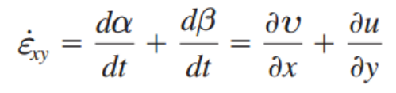
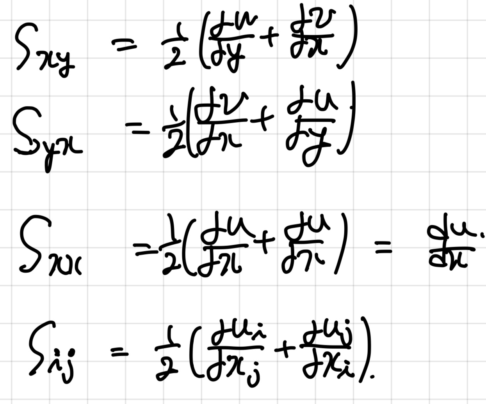

자자, Stress tensor 에 대해서 알아보기 앞서서,
유체의 Strain 에 대해서 정확히 짚고 넘어가자.
자
유체
의 경우에는 strain이 먼저 어떻게 생기고 변할까?
먼저, 고체역학에서 배운 strain부터 확인해보자.
![[Fluid mechanics] Strain tensor](./images/img-001.png)
고체역학에서는 그대로, 변형길이/원래길이가
strain의 정의이다.
하지만,
유체를 분석할때는 shear strain을 보는 것이 아니라,
Shear strain rate (시간에 따른 strain 변화)를 파악한다.
자자, 이게 정말 정말 중요한 개념이다.
유체는 고체와 다르게
전단응력(shear stress)에 따라 모양이 일정하지 않고, 끊임없이 변형
한다.
하지만, 고체는 탄성력이 존재하여, 변형을 시켜도 원래의 상태로 돌아간다.
따라서, 시간에 따라 변형률을 구하는 것이 의미가 없고, 주어진 stress에 따른 strain을 분석한다.
이와 반대로, 유체는
시간에 따른 strain(변형) = 변형률
을 분석한다.
자 이제, 2-D 미소유체의 Shear strain rate를 파악해보자.
![[Fluid mechanics] Strain tensor](./images/img-002.png)
위 그림을 보면 shear strain = alpha + beta 는
![[Fluid mechanics] Strain tensor](./images/img-003.png)
따라서, 총 변형률은 strain (alpha + beta)를 dt로 나누어준 값이다.

Newtonian fluid 인 경우,
Shear stress는 점성 Viscosity와 shear strain으로 다음과 같이 표현되었다.
![[Fluid mechanics] Strain tensor](./images/img-005.png)
단위를 잘보면, 확인 할 수 있다.
shear stress = [N/m^2]
Viscosity(u) = [N s / m^2]
strain rate = [1/ s]
자 이제, 3-D로 확장시켜서 파악해보자.
3-D의 경우 위 shaer strain 변형률을 평균화하여 다음과 같이 나타낸다.

[평균화한 이유는 제가 이해한바, normal strain 변형률과 같이 표현하고자 한 것이라 생각,
Normal strain 변형률을 du/dx로 표현 하기 위해서는 1/2로 나누어 주어야 하므로]
자 이제, 3 x 3 Matrix 로 표현해보면,
![[Fluid mechanics] Strain tensor](./images/img-007.jpg)
여기에 마지막, Lame's parameter 를 이용하여 다음과 같이 표현 할 수 있다.
https://jeffdissel.tistory.com/78
[Fluid mechanics] Stress tensor_Lame's Parameters
Stress:압력처럼, 단위면적당 가해지는 힘 그리고 그에 따라서 변형되는 정도, 고체역학 시간에 접했을 것이다. 그렇다면 이 stress를 3차원 좌표로 표현하는 방식인 stress tensor가 뭔지에 대해서
jeffdissel.tistory.com
마지막, Eq이 바로 Fluid에서
Lame parameter 와 strain tensor로
Normal stress term
Shear stress term 을 모두 표현 한 경우이다.
![[Fluid mechanics] Strain tensor](./images/img-008.png)